WHO STARTED THE WORLD WAR TWO?
What a strange question, some would say.. But is it really a strange one? Let's look at what the historical research of the past 10 - 15 years and the stamps contemporary with the events can tell us on this subject.
"Following a German-staged "Polish attack" on 31 August 1939, on 1 September German forces invaded Poland from the north, south, and west. The Invasion of Poland in 1939 precipitated World War II." This is what Wikipedia teaches us, and what we were taught during decades after the war.But newer it says also that: "It was carried out by Nazi Germany, the Soviet Union, and a small Slovak contingent."... "On 17 September 1939, the Soviet Red Army invaded the Poland in cooperation with Germany. The Soviets were carrying out their part of the secret appendix of the Molotov-Ribbentrop Pact, which divided Eastern Europe into Nazi and Soviet spheres of influence."After this very short introduction, the time came for taking a look at a relevant USSR stamp, the Sc. 767, Mi. 736, SG 893a, issued shortly after the described events, more precisely in April 1940.
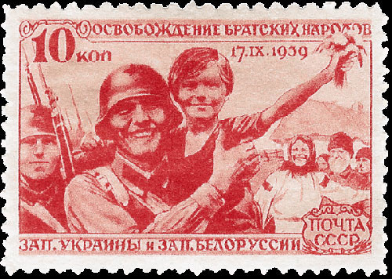
This is the first one of a set of five stamps; please note that we display and comment below the whole set. For Scott 1999, this set is a: "Welcome to Red Army by Western Ukraine and Western Byelorussia". For Michel Europa Katalog Ost 1998/1999, the set is dedicated to: "Wiedereingliederung der Westukraine und West-Weissrusslands" (reunification of ...). Both catalogues are simply taking up the Soviet propaganda. Only Stanley Gibbons, The Stamps of the World 1997, is bluntly clear: "Occupation of Eastern Poland"! By whom? Of course by the country that issued this stamp, the glorious Union of the Soviet Socialist Republic, that attacked in the back its neighbor exactly when it heroically resisted the assaults of the powerful Nazi Germany's army.
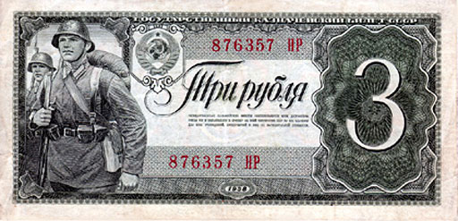
On a 3 Rubble Soviet banknote of 1938 we meet the same "soldier" who acted for the 10 K stamp. The context is obviously the same too, that of the conquest of the Eastern Poland by the Red Army.On the stamp we can read: "Liberation of brotherly nations of Western Ukraine and Western Byelorussia." And we see on the stamp the fatal date that we already know from Wikipedia: 17.IX.1939. Source. But when was this military action decided, and by whom? We cite below two different sources, from which we learn the same thing: the war against Poland and its splitting was planned and then carried out by the Nazi Germany and the Soviet Union."On August 23, 1939, Germany and the Soviet Union signed an agreement in Moscow about the destruction of the Polish state and the division of the Polish territories. Poland had mutual assistance agreements with France and the United Kingdom and, therefore, the attack by the Soviet Union and Germany automatically led to a European - and hence world - war. Indeed, in eight days, on September 1, 1939, World War II broke out. It was a direct and unavoidable result of the agreement reached in Moscow." The chief culprit : Stalin's grand design to start World War II / Viktor Suvorov. ISBN 978-1-59114-838-8."On August 23, 1939, Nazi Germany and the Soviet Union entered into a Non aggression Pact (the so-called Ribbentrop-Molotov Pact) which paved the way for the imminent invasion of Poland. A Secret Protocol to that Pact provided for the partition of Poland, as well as for Soviet domination of the Baltic States and Bessarabia. Germany attacked Poland on September 1, while the Soviet strike was delayed (by Stalin, in order to let Hitler appear as an aggressor - VM) until September 17." Source.Please take a look at this postal card, mailed on 11 January 1940 from Skidel, Grodno area, former Poland, then West Byelorussia. It was sent about four months after the Eastern part of Poland was occupied by the Soviet troops.
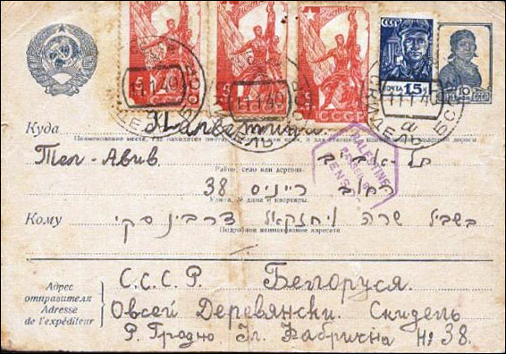
Note please the current Soviet stamps used on the card (as well as the cancel of the British Palestine censor). The stamp that appears three times was issued in January-March 1938 and shows the sculpture "Worker and Collective Farmer", largely known because it appeared at the beginning of most of the Soviets movies. But for the occupied Polish people and its destroyed army it wasn't cinema time anymore, just the awful reality of the Katyn massacre, of killings, deportations and of the NKVD rule.
Back to the Soviets "Liberation" set of April 1940, because it fully deserves our attention and "appreciation".
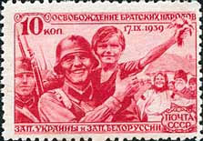
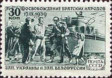
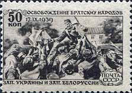
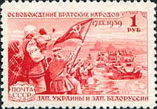
The subjects of individual stamps are: 10 K. carmine. Soldier with child; 30 k. green. People meeting red army; 50 k. black-brown. Soldier distributing Soviet newspaper; 60 k. deep blue. Soldier distributing Soviet newspaper (not shown, identical with 50 k); 1 R. red. People greeting column of tanks.
This was obviously propaganda, so let's consider the real results of the USSR contribution to the beginning of the WW2:
"The Red Army quickly achieved its targets, vastly outnumbering Polish resistance.[1] About 230,000 Polish soldiers or more (452 500[11]) were taken prisoners of war.[12] The Soviet government annexed the territory newly under its control and in November declared that the 13.5 million Polish citizens who lived there were now Soviet citizens. The Soviets quelled opposition by executions and by arresting thousands.[13] According to data published by IPN in 2009, they sent 320,000 to Siberia and other remote parts of the USSR in four major waves of deportations between 1939 and 1941. [14]. IPN estimates the number of Polish citizens that perished under the Soviet rule during World War II at 150,000. [14]. Some earlier estimates cited much higher numbers of victims." Source.
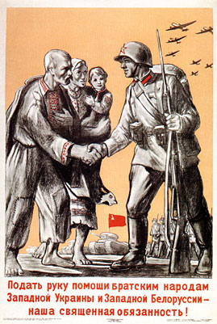
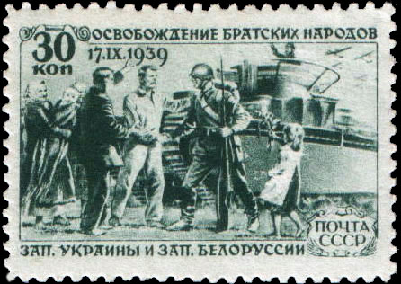
The above image on the left is a Soviet propaganda poster. It tells: "Our sacred duty is to reach a helping hand to the brotherly peoples of Western Ukraine and Western Byelorussia!" The universal "soldier's" positions are identical on the poster and on the stamp, as are the planes in the upper right corner.
Bellow a USSR stamp of 1968, commemorating the Soviet army. It shows the "liberation" of the Western Ukraine in the tragic year 1939. The Polish farmer looks really suffocated the Soviet soldier..
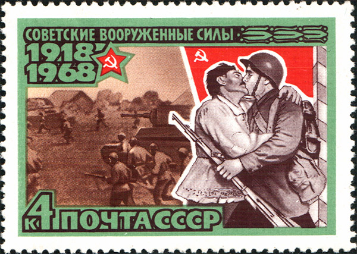
The image below, of Polish sources, says a lot about the feelings of Polish people in what concerns one of the darkest chapters of their history, that started over 80 years ago.
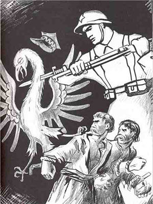
|
|
Created:
08/31/2009.
Revised: 01/31/2024.
|